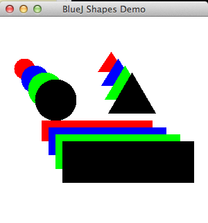
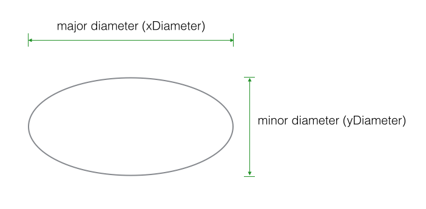
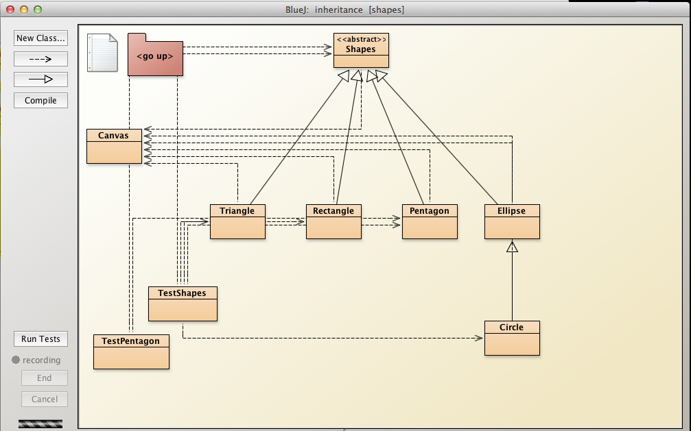
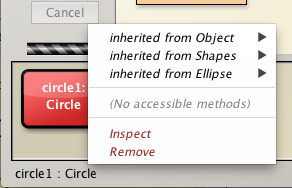
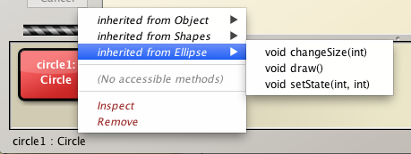

Objectives
- Solutions to exercises in Inheritance lab
Exercise 1
Refactor the Rectangle class in the shapes package as follows:
- Adopt a similar approach to that employed in the cases of Circle and Triangle.
- Extend the class from Shapes
- Delete fields from Rectangle that are already in Shapes.
- Do not change the fields in Shapes.
- Do not add or delete fields in Shapes.
- The erase class is applicable to all subclasses and so can reside in the superclass.
- It is therefore not necessary to override it in the subclass.
- Add a call to super in both Rectangle constructors.
- Modify the setState method by eliminating all parameters representing fields migrated to the superclass.
- Test by instantiating and rendering
- a default Rectangle object (Figure 1),
- a Rectangle object using the overloaded constructor.

Solution Exercise 1
Summary of steps taken to refactor Rectangle:
- Add extends Shapes
public class Rectangle extends Shapes- Delete all fields except:
private int xSideLength;
private int ySideLength;The deleted fields are already present in legacy Shapes code.
Modify the constructors by adding calls to super
Add, or modify, private setStatemethod
Delete all methods except changeSize and draw
- Deleted methods implemented in legacy Shape class
- Ensure no access modifier present in draw signature -void draw()
Here is the complete code for the refactored class Rectangle:
/**
* @file Rectangle.java
* @brief This class describes a rectangle and includes
* methods to change rectangle objects' size and appearance.
*
* @author jfitzgerald 2014-05-23
*
*/
public class Rectangle extends Shapes
{
private int xSideLength;
private int ySideLength;
/**
* Constructs a new Rectangle defined by default data
*/
public Rectangle()
{
//super(xPosition, yPosition, color, isVisible)
super(60, 50, "red", true);
//setState(xSideLength, ySideLength)
setState(60, 30);
}
/**
* Instantiates Rectangle, a subclass of Shapes
* @param xSideLength the length of the rectangle
* @param ySideLength the width or height of the rectangle
* @param xPosition the x-coordinate of the top left corner of the rectangle
* @param yPosition the y-coordinate of the top left corner of the rectangle
* @param color the colour of the rectangle including perimeter and body
*/
public Rectangle(int xSideLength, int ySideLength, int xPosition, int yPosition, String color)
{
super(xPosition, yPosition, color, true);
setState(xSideLength, ySideLength);
}
private void setState(int xSideLength, int ySideLength)
{
this.xSideLength = xSideLength;
this.ySideLength = ySideLength;
}
public void changeSize(int scale)
{
erase();
this.xSideLength *= scale;
this.ySideLength *= scale;
draw();
}
void draw()
{
if(isVisible) {
Canvas canvas = Canvas.getCanvas();
canvas.draw(this, color,
new java.awt.Rectangle(xPosition, yPosition, xSideLength, ySideLength));
canvas.wait(10);
}
}
}Exercise 2
Refactor the TestShapes class as follows:
- Instantiate 4 Rectangle objects
- Choose arguments so that the Rectangle objects display in a cascade style
- Ensure the objects do not impinge on the Triangle and Circle objects
- Aim for a display similar to Figure 2. 
Solution Exercise 2
import java.util.ArrayList;
public class TestShapes
{
public static void main(String[] args)
{
ArrayList<Shapes> shapes = new ArrayList<>();
shapes.add(new Circle(30, 20, 60, "red"));
shapes.add(new Circle(40, 30, 70, "blue"));
shapes.add(new Circle(50, 40, 80, "green"));
shapes.add(new Circle(60, 50, 90, "black"));
shapes.add(new Triangle(30, 40, 160, 50, "red"));
shapes.add(new Triangle(40, 50, 170, 60, "blue"));
shapes.add(new Triangle(50, 60, 180, 70, "green"));
shapes.add(new Triangle(60, 70, 190, 80, "black"));
shapes.add(new Rectangle(160, 30, 60, 150, "red"));
shapes.add(new Rectangle(170, 40, 70, 160, "blue"));
shapes.add(new Rectangle(180, 50, 80, 170, "green"));
shapes.add(new Rectangle(190, 60, 90, 180, "black"));
for(Shapes shape : shapes)
{
shape.makeVisible();
}
}
}Exercise 3
Develop a class Pentagon.
Figure 3 depicts a pentagon and its circumscribing circle.

In this exercise the origin of the pentagon is the centre of the circumscribing circle.
- For example the invoking the method moveTo(int x, int y) with (x, y) == (0, 0) results in output shown in Figure 4.

Use Shapes as a superclass.
Following is skeleton code for the class:
import java.awt.Polygon;
/**
* @file Pentagon.java
* @brief This class describes a pentagon and has behaviour to display, resize and move objects
*
* @author jfitzgerald 2014-05-23
*
*/
public class Pentagon
{
private int radius;//radius of circumscribing circle
public Pentagon()
{
super(...);
this.radius = 50;
}
public Pentagon(int radius, int xPosition, int yPosition, String color)
{
super(...);
...
}
public void changeSize(int scale)
{
...
...
...
}
void draw()
{
if(isVisible) {
//Ref: http://mathworld.wolfram.com/Pentagon.html
double dc1 = 0.25*(Math.sqrt(5) - 1);
double dc2 = 0.25*(Math.sqrt(5) + 1);
double ds1 = 0.25*(Math.sqrt(10 + 2*Math.sqrt(5)));
double ds2 = 0.25*(Math.sqrt(10 - 2*Math.sqrt(5)));//length of pentagon side is 2*ds2
int c1 = -(int)(radius*dc1);//radius of circle that circumscribes pentagon
int c2 = -(int)(radius*dc2);
int s1 = (int)(radius*ds1);
int s2 = (int)(radius*ds2);
Canvas canvas = Canvas.getCanvas();
int[] xpoints = { xPosition,
xPosition + s1,
xPosition + s2,
xPosition - s2,
xPosition - s1
};
int[] ypoints = { yPosition - radius,
yPosition + c1,
yPosition - c2,
yPosition - c2,
yPosition + c1
};
canvas.draw(this, color, new Polygon(xpoints, ypoints, 5));
canvas.wait(10);
}
}
}Write a class TestPentagon to display a series of Pentagon objects as depicted in Figure 5.

Here is the TestPentagon skeleton:
public class TestPentagon
{
public static void main(String[] args)
{
ArrayList<Shapes> shapes = new ArrayList<>();
shapes.add(new Pentagon(30, 60, 30, "red"));
shapes.add(new Pentagon(... "blue"));
shapes.add(new Pentagon(... "green"));
shapes.add(new Pentagon(... "black"));
for(Shapes shape : shapes)
{
...
}
}
}Solution Exercise 3
Here is the Pentagon class:
import java.awt.Polygon;
public class Pentagon extends Shapes
{
private int radius;//radius of circumscribing circle
public Pentagon()
{
//super(xPosition, yPosition, color, isVisible)
super(50, 50, "black", true);
this.radius = 50;
}
public Pentagon(int radius, int xPosition, int yPosition, String color)
{
//super(xPosition, yPosition, color, isVisible)
super(xPosition, yPosition, color, true);
this.radius = radius;
}
public void changeSize(int scale)
{
erase();
this.radius *= scale;
draw();
}
void draw()
{
if(isVisible) {
//Ref: http://mathworld.wolfram.com/Pentagon.html
double dc1 = 0.25*(Math.sqrt(5) - 1);
double dc2 = 0.25*(Math.sqrt(5) + 1);
double ds1 = 0.25*(Math.sqrt(10 + 2*Math.sqrt(5)));
double ds2 = 0.25*(Math.sqrt(10 - 2*Math.sqrt(5)));//length of pentagon side is 2*ds2
int c1 = -(int)(radius*dc1);//radius of circle that circumscribes pentagon
int c2 = -(int)(radius*dc2);
int s1 = (int)(radius*ds1);
int s2 = (int)(radius*ds2);
Canvas canvas = Canvas.getCanvas();
int[] xpoints = { xPosition,
xPosition + s1,
xPosition + s2,
xPosition - s2,
xPosition - s1
};
int[] ypoints = { yPosition - radius,
yPosition + c1,
yPosition - c2,
yPosition - c2,
yPosition + c1
};
canvas.draw(this, color, new Polygon(xpoints, ypoints, 5));
canvas.wait(10);
}
}
}Here is the code for the test class TestPentagon:
import java.util.ArrayList;
public class TestPentagon
{
public static void main(String[] args)
{
ArrayList<Shapes> shapes = new ArrayList<>();
shapes.add(new Pentagon(30, 60, 30, "red"));
shapes.add(new Pentagon(40, 90, 50, "blue"));
shapes.add(new Pentagon(50, 120, 70, "green"));
shapes.add(new Pentagon(60, 150, 90, "black"));
for(Shapes shape : shapes)
{
shape.makeVisible();
}
}
}Exercise 4
Change the inheritance hierarchy of shapes to that shown in Figure 6:
- Create an Ellipse class
- Derive Ellipse directly from Shapes
- Change Circle so that it is derived directly from Ellipse.

Hint: you have already encountered an Ellipse class in Assignment 2.
Solution Exercise 4
This exercises requires us to
- Develop an Ellipse class derived directly from Shapes
- Refactor the Circle class so that it derives directly from Ellipse

Here is the Ellipse class:
import java.awt.*;
import java.awt.geom.*;
/**
* An ellipse that can be manipulated and that draws itself on a canvas.
*
* @author Michael Kolling and David J. Barnes
* @author jfitzgerald 2014.04.02
* @version 2006.03.30
*/
public class Ellipse extends Shapes
{
private int xdiameter;
private int ydiameter;
/**
* Create a new Ellipse at default position with default color.
*/
public Ellipse()
{
super(20, 60, "blue", true);
setState(70, 40);
}
public Ellipse (int xdiameter, int ydiameter, int xPosition, int yPosition, String color)
{
super(xPosition, yPosition, color, true);
setState(xdiameter, ydiameter);
}
public void setState(int xdiameter, int ydiameter)
{
this.xdiameter = xdiameter;
this.ydiameter = ydiameter;
}
void changeSize(int scale)
{
super.erase();
super.changeSize(scale);
draw();
}
/**
* Draw the circle with current specifications on screen.
*/
void draw()
{
if(isVisible) {
Canvas canvas = Canvas.getCanvas();
canvas.draw(this, color, new Ellipse2D.Double(xPosition, yPosition,
xdiameter, ydiameter));
canvas.wait(10);
}
}
}The Circle class follows:
import java.awt.geom.*;
/**
* A circle that can be manipulated and that draws itself on a canvas.
*
* @author Michael Kolling and David J. Barnes
* @version 2006.03.30
*
* @author jfitzgerald
* @version 2015-04-22
*
*/
public class Circle extends Ellipse
{
/**
* Create a new circle at default position with default color & diameter.
*/
public Circle()
{
// int xdiameter, int ydiameter, int xPosition, int yPosition, String color
super(120, 120, 0, 0, "red");
}
public Circle (int diameter, int xPosition, int yPosition, String color)
{
// int xdiameter, int ydiameter, int xPosition, int yPosition, String color
super(diameter, diameter, xPosition, yPosition, color);
}
}The Circle class inherits all the methods and data of the Ellipse superclass.
See Figure 6 for the refactored inheritance class diagrams.

You can see the methods that are available for invocation to Circle objects from Figures 7 to 10 inclusive.
- Methods in Circle : none. 
- Methods in Ellipse : see Figure 8 
- Methods in Shapes : see Figure 9

- Methods in Object : see Figure 10